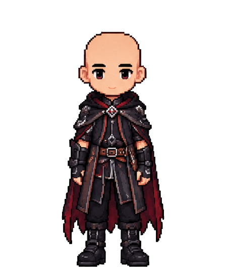
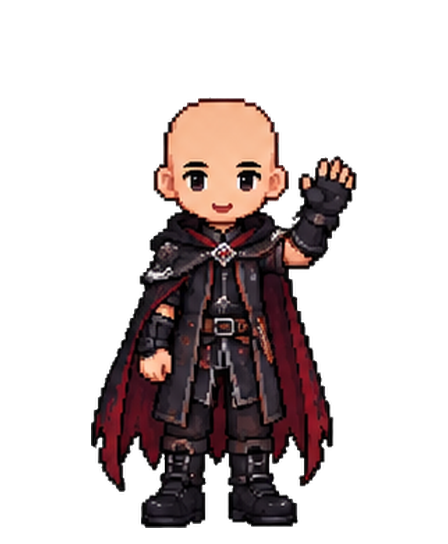

PETUALANGAN DIMULAI DARI KEBERANIAN
Kepala boleh
gundul.
Nyali jangan.
Lompati rintangan. Pecahkan fungsi. Pulihkan mesin kuno yang menghubungkan tiga dunia.
Tanpa batas waktu. Salah? Pelajari, lalu coba lagi.
01 / HUTAN FUNGSI

KENALI SANG PETUALANGGundul WarriorBerbekal nyali & sedikit matematika.
f(g(x))
SATU MISI, TIGA WILAYAH
Jalan panjang.
Langkah pertamamu.
01
Hutan Fungsi
Kenali input dan output.
02
Gua Komposisi
Dua fungsi, satu urutan.
03
Kastel Matematika
Pulihkan mesin terakhir.
PULIHKAN MESIN FUNGSI
SKOR 0/120KUNCI 0/3
Ikuti jalan menuju mesin pertama.
A D berjalan / Space melompat / E interaksiCheckpoint: awal wilayah
CATATAN PERJALANAN
MESIN FUNGSI TELAH PULIH

Nyali besar.
Misi tuntas.
Tiga wilayah dilalui. Setiap kesalahan menjadi pelajaran.